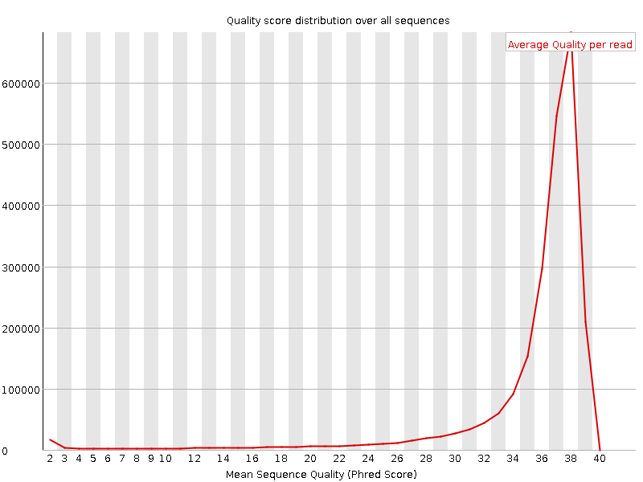
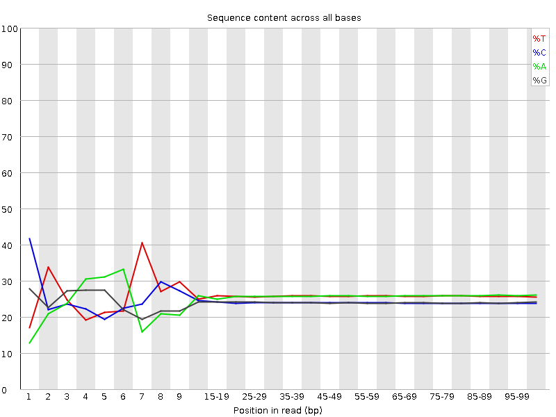
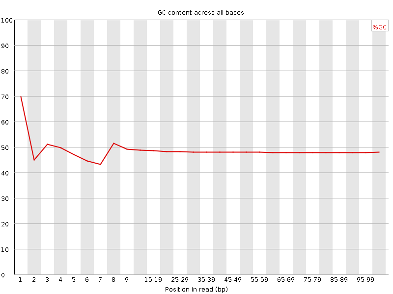
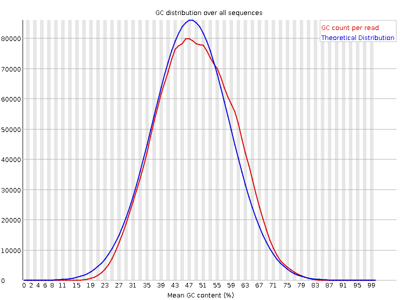
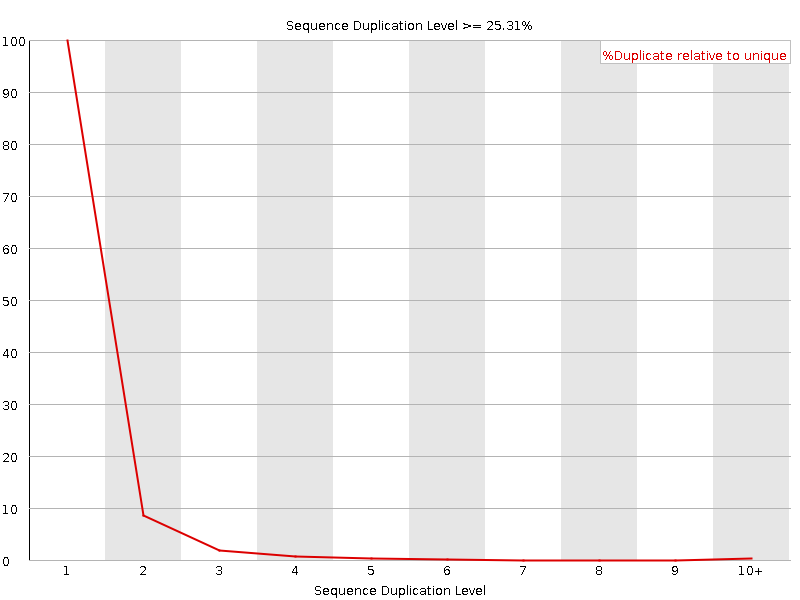
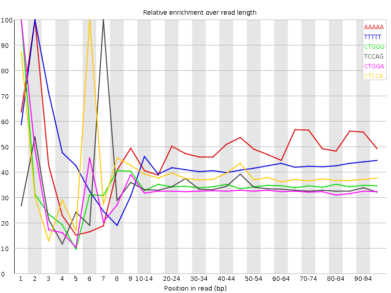

![[OK]](Icons/tick.png) Basic Statistics
Basic Statistics
| Measure | Value |
|---|---|
| Filename | C0RTFACXX120719.7.ATTGTCTG_1.fastq |
| File type | Conventional base calls |
| Encoding | Sanger / Illumina 1.9 |
| Total Sequences | 2364511 |
| Filtered Sequences | 0 |
| Sequence length | 101 |
| %GC | 48 |
Per base sequence quality

Per sequence quality scores

![[FAIL]](Icons/error.png) Per base sequence content
Per base sequence content

Per base GC content

Per sequence GC content

Per base N content

Sequence Length Distribution

![[WARN]](Icons/warning.png) Sequence Duplication Levels
Sequence Duplication Levels

Overrepresented sequences
No overrepresented sequences
Kmer Content

| Sequence | Count | Obs/Exp Overall | Obs/Exp Max | Max Obs/Exp Position |
|---|---|---|---|---|
| AAAAA | 905415 | 3.492789 | 7.1912 | 2 |
| TTTTT | 763640 | 2.853089 | 6.691874 | 2 |
| CTGGG | 458010 | 2.268666 | 6.5530267 | 1 |
| TCCAG | 483190 | 2.2317116 | 6.5492997 | 7 |
| CTGGA | 473350 | 2.1965082 | 6.7092137 | 1 |
| CTCCA | 464835 | 2.1369216 | 5.5493326 | 6 |
| AAAAT | 506845 | 1.9427649 | 5.486353 | 3 |
| CTGGC | 393565 | 1.9403578 | 5.2362423 | 1 |
| CTCAG | 375555 | 1.7345773 | 5.141887 | 1 |
| CTTTG | 387310 | 1.6622819 | 5.1798563 | 1 |
| GGAAA | 373965 | 1.643789 | 5.0177965 | 1 |
| CTTGG | 351610 | 1.6211829 | 5.119533 | 1 |
| GTTTT | 347055 | 1.3929957 | 5.122143 | 1 |
| ATCCA | 285745 | 1.2363845 | 5.3489275 | 6 |